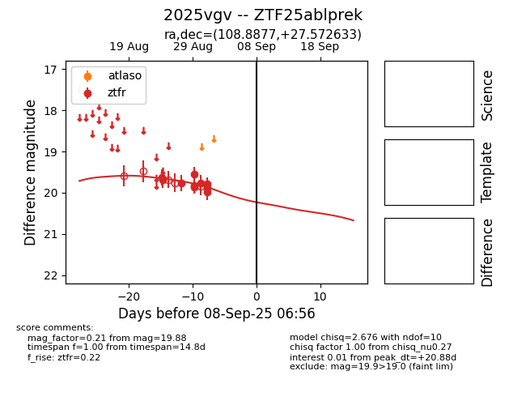

Target 2025vgv at 2025-08-27 17:59, see:
FINK: fink-portal.org/ZTF25ablprek
Lasair: lasair-ztf.lsst.ac.uk/objects/ZTF25ablprek
ALeRCE: alerce.online/object/ZTF25ablprek
TNS: wis-tns.org/object/2025vgv
YSE: ziggy.ucolick.org/yse/transient_detail/2025vgv
alt names
ZTF25ablprek (ztf,fink)
2025vgv (tns,yse)
coordinates:
equatorial (ra, dec) = (108.8877,+27.57263)
galactic (l, b) = (190.1902,+17.09229)
photometry
last ztfr=19.76
3 ztfr detections
